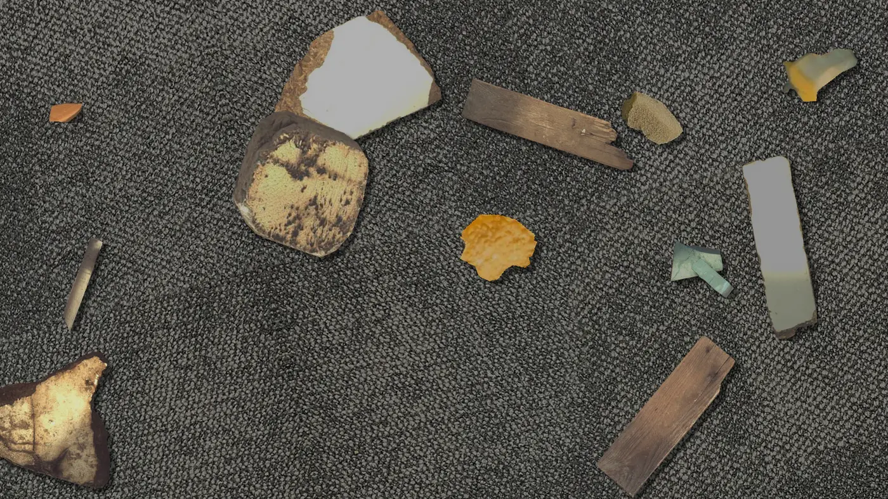
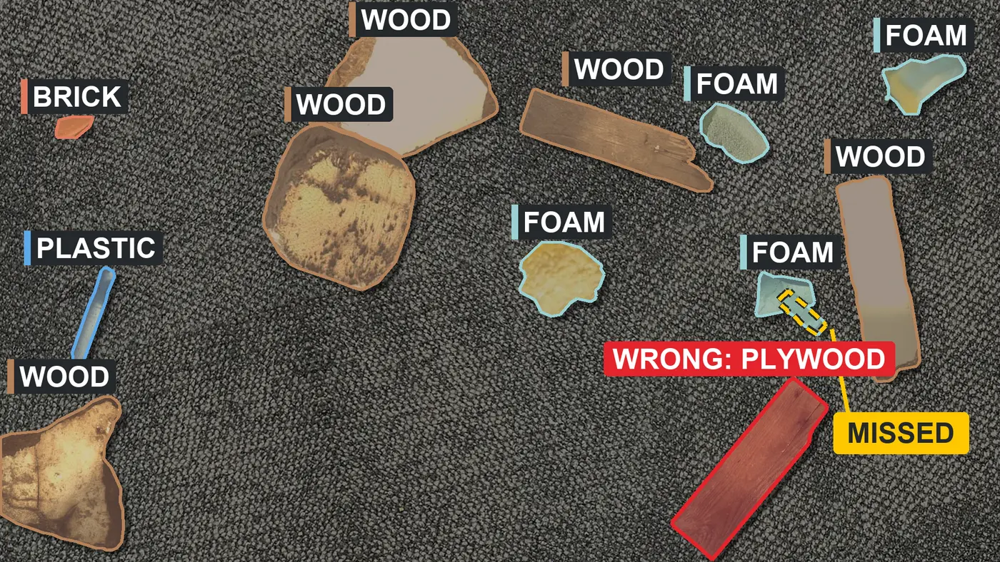
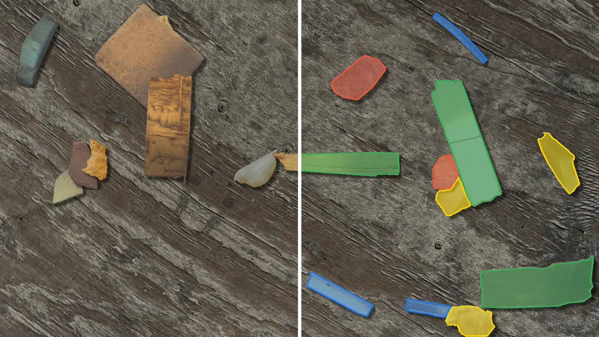
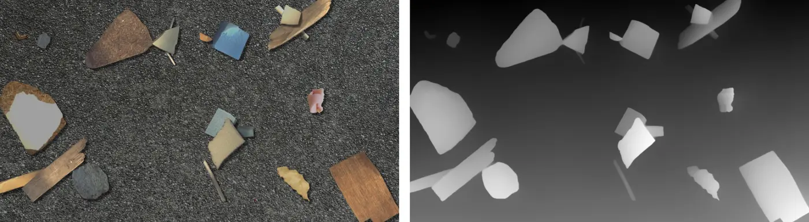
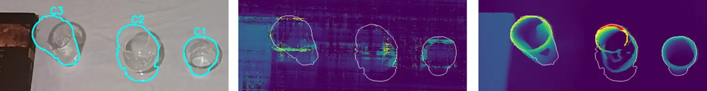
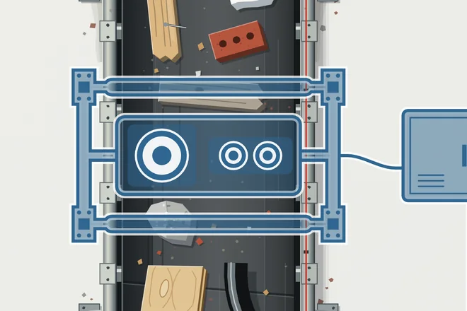
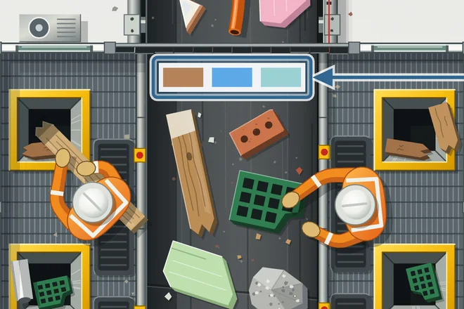
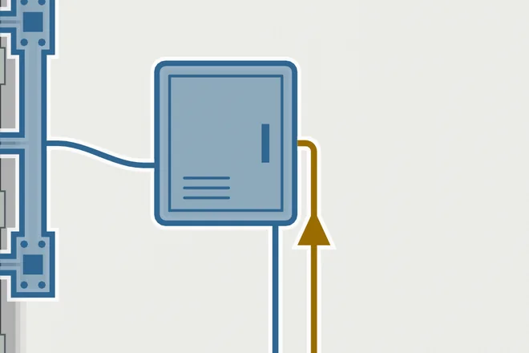

27.4Mt
The largest waste category
Building and demolition materials: 27.4 million tonnes across Australia in 2024–25.
DCCEEW 2026
I’m teaching cameras to outline and name every piece of construction and demolition waste, so each material stays clean enough to be used again. The goal: a system any C&D recycler can deploy, that adapts to each site and keeps learning.
Tested on images so far. Next step: a real belt.


Drag the yellow handle to compare the photo with what the model drew.
13 pieces in the answer key. The model outlined 12 and named 11 exactly right. It called one timber board plywood: right family (WOOD), wrong exact name, so it is marked red. It missed one small XPS foam strip lying against another foam piece, and drew one outline round both. No false alarms.
These are test scenes built from photos of real waste pieces: tidier than a real belt, and likely easier. The three scenes were drawn at random, not picked by eye. None of this is facility footage. That is what a trial would add.
Why it matters
27.4Mt
Building and demolition materials: 27.4 million tonnes across Australia in 2024–25.
DCCEEW 2026
83%
Nationally, 83% of C&D waste was recovered in 2024–25. Building and demolition materials were recycled in larger amounts than any other category: 23.2 million tonnes.
DCCEEW 2026
$157vs$449
At a Melbourne gate, clean concrete, bricks, tiles and rubble cost $157 a tonne to drop off. A contaminated load is charged as general waste: $449 a tonne.
Cleanaway Brooklyn list prices incl. GST, checked 14 November 2026
These figures show what is at stake, not savings from this system.
The model in the test pictures does not name cement sheeting (the contaminant the price list names) or plasterboard (the gypsum in the NSW limit); for plasterboard, see Questions.
Sources: DCCEEW, National waste and resource recovery report 2026 (2024–25 data). Recycling Victoria, Circular Economy Market Report 2026 (PDF, 4.6 MB), pages 28–29 (2023–24 data; projections by Recycling Victoria).
The work
Six parts, from training data to learning on site, with where each one stands. The detail sits behind each “Numbers and limits”.
Each real waste piece is outlined once. A program then pastes the pieces into new scenes on site-like backgrounds, with as much clutter and overlap as we choose, and every new picture comes with its labels.
52,000 labelled images from 18,000 pieces, across 12 materials
→ Aim: less hand-labelling at new sites.

“their sensitivity and discriminative power on facility camera feeds have not yet been validated.”
During training, photos are usually varied on purpose (flipped, recoloured, mixed together) so the model sees more variety. This study tested which variations actually help with C&D waste, using public photos of waste on a conveyor belt.
80 variations on 20 fast models: the resulting recipe beat the standard one on 19 of 20
→ Gains on nearly every model, some small.
On a belt, the answer must reach the pickers before the piece does. This study compares seven versions of one model on speed and accuracy, so a site could pick one that keeps up with its line.
→ Aim: match your line’s speed.
Software can estimate depth from an ordinary image, with no depth sensor. On test scenes, does feeding that depth to the model help it outline each piece? Three ways of feeding it in were tested.
→ So far, model choice beat adding depth.

In review. How much depth adds is held until a re-check of the depth inputs is complete; the gap between models, measured without depth, does not depend on that check.
A low-cost 3D camera judges depth from two side-by-side lenses, like a pair of eyes. It will photograph about 450 real C&D pieces, to measure for which materials real depth helps and for which it does not. Capture is planned for 2026–27.
→ Where does 3D pay off?
The camera is a Luxonis OAK-D PoE. See-through glass is a hard case for depth cameras. Thin, flat pieces (plasterboard, flat glass, tile, cardboard and film) are the control group: they lie too flat for this camera to tell them apart from the surface beneath, so depth is not expected to help there.

Limits so far: nothing has been tested on a working facility’s camera feed yet. Results so far come from images: test scenes built from photos of real pieces, and public image datasets. No company is a partner yet.
On your site
This is where the research is heading; none of it is installed anywhere yet. On a site, the agent would:



Asking and learning on site are the end goal (part 6). It would inform; people or machines would still do the sorting. It does not detect asbestos and does not replace trained inspection.

It would flag pieces it is unsure of. A person would confirm, and the model would update on site.
→ Aim: keep up as materials change.
Work with me
Trials, data, ideas or roles: open to all of it. Some starting points:
The current models would be run on them offline at Monash, and you would get back a plain summary of what they picked out and which common materials are outside what they know. It is a first look, not a measured result: their accuracy on real footage is untested. Nobody comes on site and nothing connects to plant systems.
A temporary camera over one belt, pointed at the belt only and not connected to any controls.
An introduction to a recycler, site or team that might care helps just as much.
Data, ideas, research partnerships or funding.
Any arrangement goes through Monash and is agreed before anything is shared, including what can be made public. Duration, inductions and insurance are agreed case by case.
PhD candidate (Year 3), Department of Civil and Environmental Engineering, Monash University. Supervisors: Mehrdad Arashpour and Yiannis Ventikos.
What I work on: computer vision for cluttered scenes, from synthetic training data and instance segmentation to model speed and depth sensing.
Open to computer vision and AI roles from 2027. CV on request.
Questions
Yes. The outlines are traced from the model’s own masks (lightly simplified, no hand edits), at a confidence of 0.5 or more. The tags group its 12 material names into families, and red marks an exact name it got wrong. The yellow dashed outline and MISSED are our marks from the scene’s answer key. The scenes were kept out of training, but they are built the same way as the training scenes (cut-out photos of real pieces on site-like backgrounds), so they are tidier than a real belt, and likely easier. See the test scenes.
Not yet. Everything so far uses images: test scenes built from photos of real pieces, and public image datasets. That is why a test on a real belt is needed; it would need a site willing to host one.
No figure from a working facility yet. One example, from the training study in part 2 (paper in preparation): on ReCoDeWaste, cluttered C&D piles from our lab group, the smallest YOLO26 model found about 57 of every 100 pieces (averaged across materials) with our training recipe. That compares with 54 using the standard recipe and 46 with none. False alarms are not counted.
No. None of the studies covers them, and it does not replace trained inspection.
The model in the test outputs names 12 materials: concrete, clay brick, tile, HDPE and PVC plastics, EPS and XPS polystyrene, flexible and spray polyurethane foam, particle board, plywood and solid timber. In a separate study (part 2, paper in preparation), models were trained on public C&D image datasets that also include plasterboard (CODD, where it was among the easiest materials), metal and cardboard (ReCoDeWaste). None of this has been tested at a plant. Glass is planned for part 5.
Not defined yet. Costs, and who owns and may use any footage, would be agreed through Monash before anything is shared. Possible first steps are listed under Work with me.
Today it outlines and names pieces in an image. The aim is to support sorting decisions: it would warn pickers what is coming and report to the control room what came in each shift, and people or machines would sort. Possible first steps are listed under Work with me.
Not tested on a working line yet. In our training study (part 2, paper in preparation) on a public conveyor-belt dataset (CODD), plasterboard (gypsum board) was among the easiest materials for the models we tested; whether that holds in dust and clutter is untested. In part 5, plasterboard is one of the thin, flat pieces in the control group: they lie too flat for a low-cost depth camera to tell them apart from the surface beneath, so depth is not expected to help there.
Not tested on dusty belts. A related finding: changing colours during training helped little or made results worse, which suggests the models lean on colour, so dust may hurt. Another reason a test on a working belt is needed.
Speed has only been measured on a large data-centre graphics card (one NVIDIA A100): about 139 ms per image, or about 7 a second, for the starting version (not the one in the pictures) with its depth input switched off. Estimating depth, timed on its own, takes about 197 ms per image; the whole chain with depth has not been timed in one go. Site computers, enclosures, dust and lens cleaning have not been tested, and no cost estimate exists.
Not designed or tested yet: learning on site is the end goal. When and how often a person is asked would be worked out with a partner site.
No comparison has been done, and commercial systems already exist. This PhD asks narrower questions: how little labelling a new C&D site needs, and when a cheap depth camera adds anything.
No, not tonnes. Current work outlines and names pieces in images; no study measures weight.
Gate fees are paid by whoever delivers the load. No savings estimate exists for this system at any site. The public prices under Why it matters only show what contamination costs. A first trial would only test recognition on your footage; any effect on costs is a later question.
Not tested. The studies so far use test scenes on site-like backgrounds and public photos of waste on a conveyor belt or in piles; recognising waste inside truck bodies, skips or bins has not been tried. A fair idea to discuss.
Right now it is a PhD thesis at Monash (Year 3), not a product. Whether it could become one is an open question, and I’d welcome candid views. I’m open to any opportunity this work could lead to, including computer vision and AI roles from 2027.
For the record
Thesis: Adaptive AI Perception for Construction and Demolition Waste Recovery.